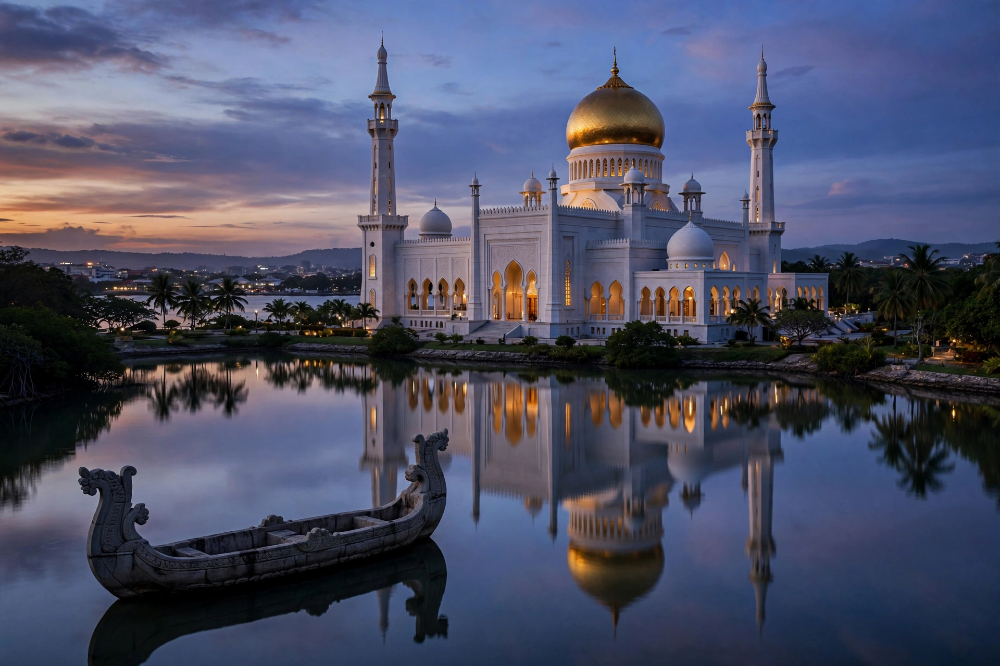

[Image placeholder: The Omar Ali Saifuddien Mosque and its ceremonial barge]| Country | Brunei |
|---|---|
| Population | About 100,000 (city); metro about 280,000 |
| Name meaning | 'Port of the revered prince' — renamed 1970 for Sultan Omar Ali Saifuddien III |
| Former name | Brunei Town |
**Bandar Seri Begawan** is the capital and largest city of Brunei, on the Brunei River in the northeast of the sultanate. It combines a modern ceremonial centre — the gold-domed Omar Ali Saifuddien Mosque (1958) set in a lagoon, the Royal Regalia Museum, and the sultan's vast Istana Nurul Iman palace, among the world's largest residential palaces — with Kampong Ayer, the centuries-old water village of stilt houses across the river that is home to tens of thousands.
The city was known simply as Brunei Town until 1970, when it was renamed for the previous sultan, father of the current monarch. The old capital on the river was bombarded in the Second World War; the modern city grew with oil wealth after independence in 1984.
Beyond the mosque and regalia museum: the Jame' Asr Hassanil Bolkiah Mosque (1994) with its 29 golden domes, the Malay Technology Museum in Kampong Ayer, the Jerudong amusement district, and markets at Tamu Kianggeh under tamarind trees.